現時主流嘅 Phonics 課程，例如
Jolly Phonics、Letterland 同 Read Write Inc.（RWI），
全部都屬於 Systematic Synthetic Phonics，
但教學設計、記憶方式同課程取向上各有不同。
⭐⭐⭐為最高分
| 比較項目 | Jolly Phonics | Letterland | RWI (Read Write Inc.) |
|---|---|---|---|
| 是否 Synthetic Phonics | 是⭐⭐⭐ | 是⭐⭐⭐ | 是⭐⭐⭐ |
| 教學系統性 | 有系統教學聲音，但結構較鬆散⭐ | 有系統，角色與規則高度連結⭐⭐⭐ | 高度系統化，課程進度非常清晰 ⭐⭐⭐ |
| Phonemes 數目 | 42 個常用教學音素 | 44 個音素 | 44 個音素 |
| 記憶法設計 | 為首次出現的音素設故事⭐⭐ | 每個字母設角色，Digraph 由角色互動形成 ⭐⭐⭐ | 以圖像與口語提示為主⭐⭐ |
| Phonics Readers | 4個Stages，每個Stage約12本，共48本 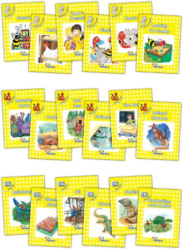 | 不同版本及出版社所出的讀本數量略有不同，合共超過 50 本以上 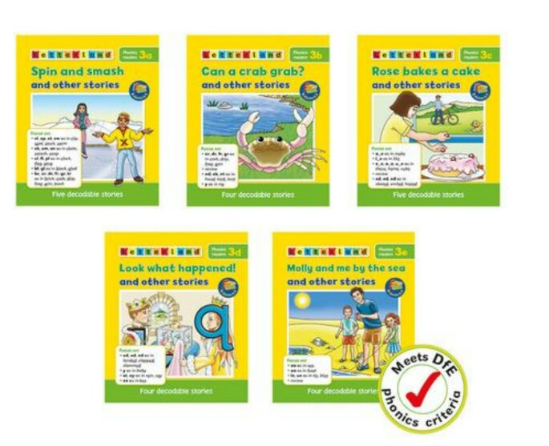 | 8 個Stages，每個Stage有Storybooks,Non-fiction,Book Bag Books，每個Stage 12本以上 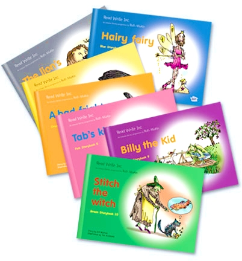 |
| 拼讀與串字 | 以拼讀為主⭐ | 拼讀與串字並行⭐⭐⭐ | 讀寫同步進行⭐⭐⭐ |
| Phonemic Awareness(用於串字的聽力練習) | 有限⭐ | 有相關訓練⭐⭐⭐ | 非常重視⭐⭐⭐ |
| 歌曲輔助 | A–Z 及 Digraphs 均有歌曲 | 主要為 A–Z 歌曲 | 無系統化原音歌曲 |
| 完成課程時間 | 約 1.5 – 2.5 年 | 約 1.5 – 2.5 年 | 約 3 – 4 年 |
| 適合年齡 | 約 3 歲+ | 約 3.5 歲+ | 4 歲以上（需基本書寫能力） |
家長常見問題
三套 Phonics 課程（Jolly Phonics、Letterland、RWI）應該點揀？
Jolly Phonics、Letterland 同 RWI 都屬於 Synthetic Phonics，但適合對象唔同：Jolly Phonics 偏向唱遊入門，適合年紀較細嘅小朋友；Letterland 以角色故事建立記憶線索，對拼讀同串字理解較清晰；RWI 結構最嚴謹，適合有時間、想同時強化讀寫能力嘅學生。選擇時應根據孩子年齡、學習目標同學習時間，而唔係只睇品牌。
Jolly Phonics 真係只教 42 個 phonemes？會唔會影響學習？
Jolly Phonics 官方教授 42 個 phonemes，主要未獨立處理 /ʒ/ 同 schwa /ə/，但呢個設計並唔會影響初階閱讀能力，因為相關音素多數出現在多音節字。⚠️ 但對以英語為第二語言的香港學生而言，當進入多音節閱讀、串字同默書階段，如果冇學弱讀概念，理解就會開始出現落差。
邊一套 Phonics 方法最容易記得、最唔易混亂？
記憶效果取決於有冇「線索」可以串連音、字母同規則。相比只靠短句或圖片提示，Letterland 將字母、digraph 同 phonics rules 全部包入角色性格同故事互動，形成可追溯的記憶網絡，因此在大量規則累積時較唔易混亂；Jolly Phonics 同 RWI 則較多屬於獨立記憶單位。
Jolly Phonics：故事幫助記音，但連結有限
Jolly Phonics 為每個音編寫故事，例如 /d/ 以打鼓聲作聯想， 有助初學者記住發音。 但故事與字母本身未必有直接邏輯關係， 重覆出現的音（如 oi / oy）亦只能共用同一個故事， 當規則累積後，較容易變成獨立記憶單位。
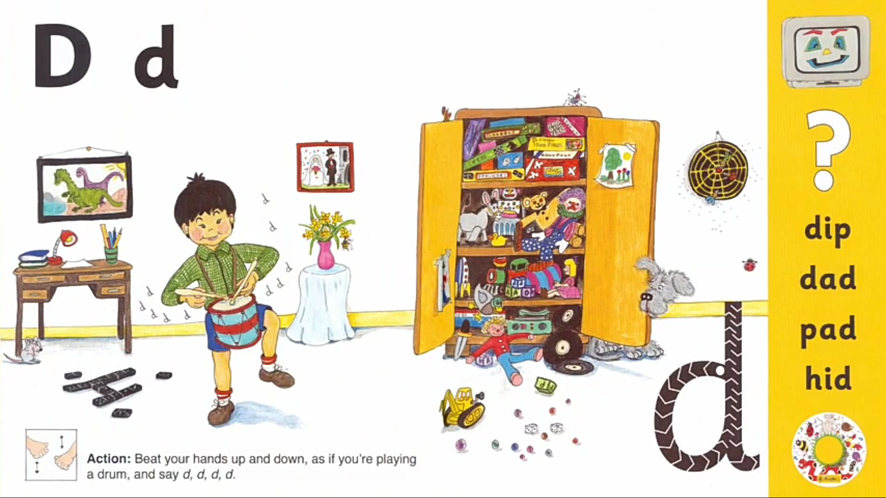 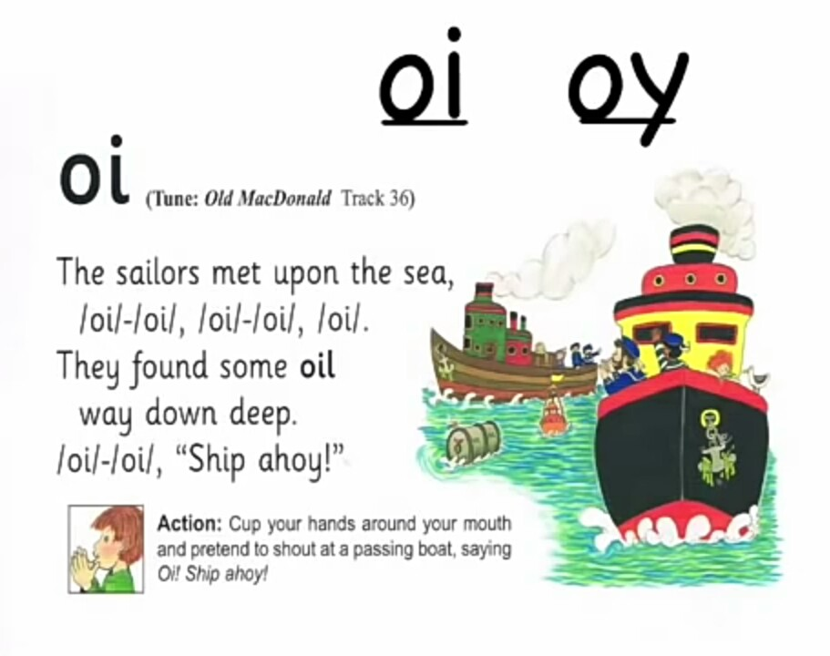RWI：圖像輔助為主，但規則之間關聯較弱
RWI 以字母形態變化出物件或動物，主要輔助書寫記憶。 除 sh / th / ch 有角色故事外， 其他 digraph 多以短句介紹， 與之前字母設定缺乏延續性， 記憶線索較為分散。
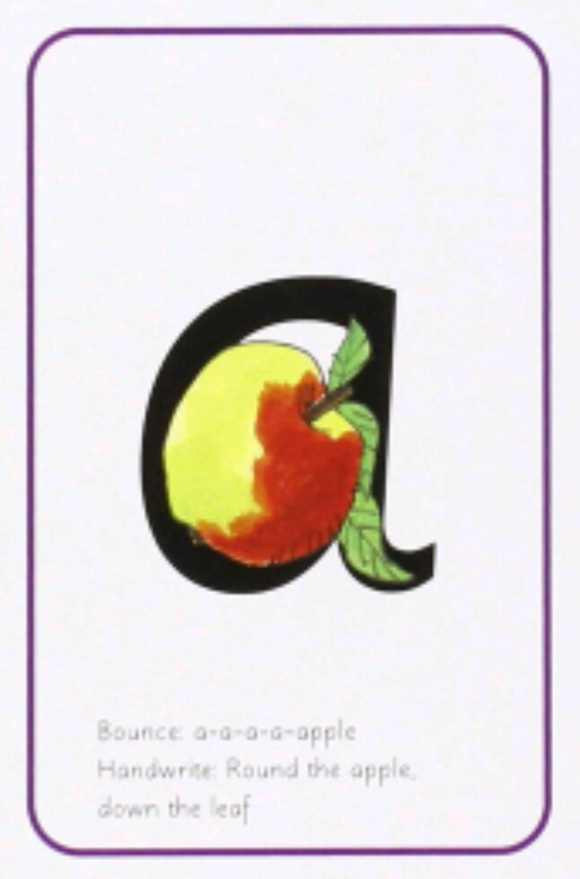 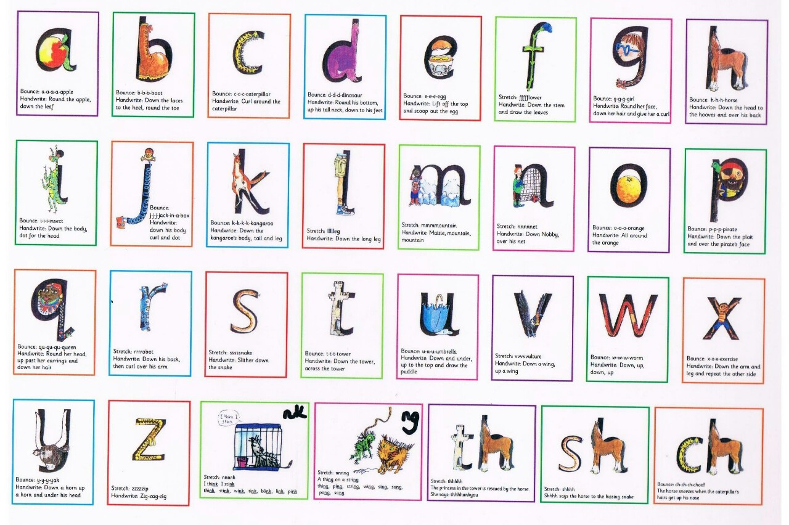 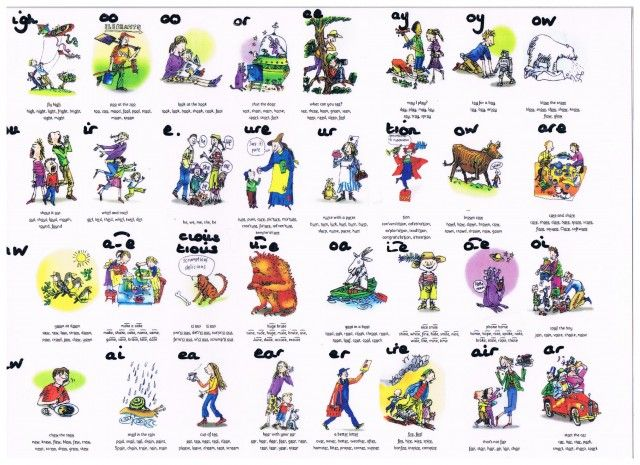 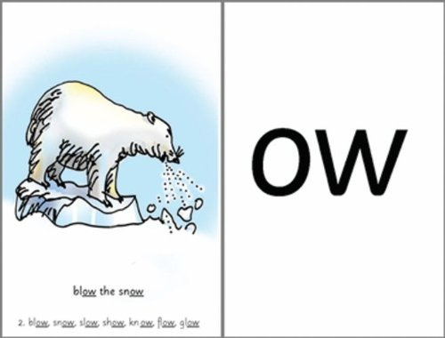Letterland：角色性格形成完整記憶網絡
Letterland 以字母嘅形態，為每個Letter塑造一個角色(即26個角色)，角色嘅性格設定跟發音有一定關係，例如設定Letter H係Harry hat man，佢性格係唔鍾意嘈嘅，咁係因為h好多時都係唔發音嘅 ; 而digraphs就係由2至3個角色走埋一齊時所發生嘅故事嚟記個發音，例如當Clever cat同Harry hat一齊時，Clever cat 會因為Harry 頂毛毛帽令到佢不停打噴嚏，就可以令小朋友記到ch讀/ch/ 音喇 。
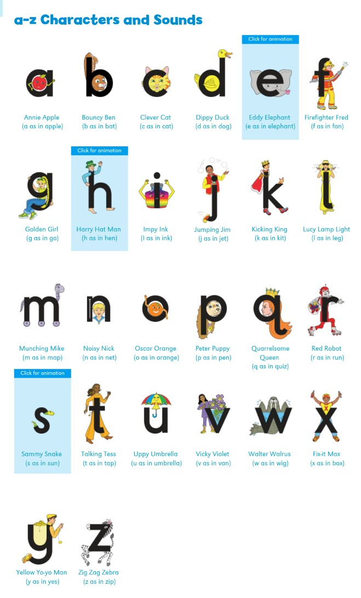 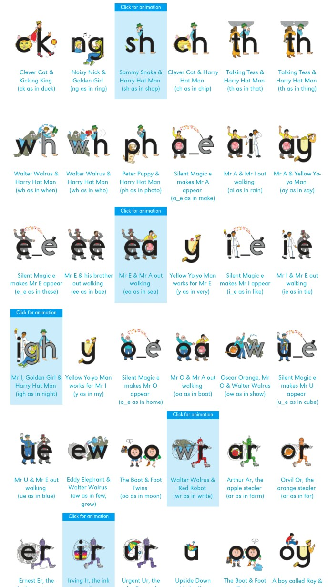
以 i/r/ir 為例，Letterland只需記兩個角式，見到ir時就可以聯想返"ir"嘅故事，但Jolly Phonics同RWI 嘅i/r/ir 冇關聯,是3個各自獨立的內容，唔能夠串連在一起!
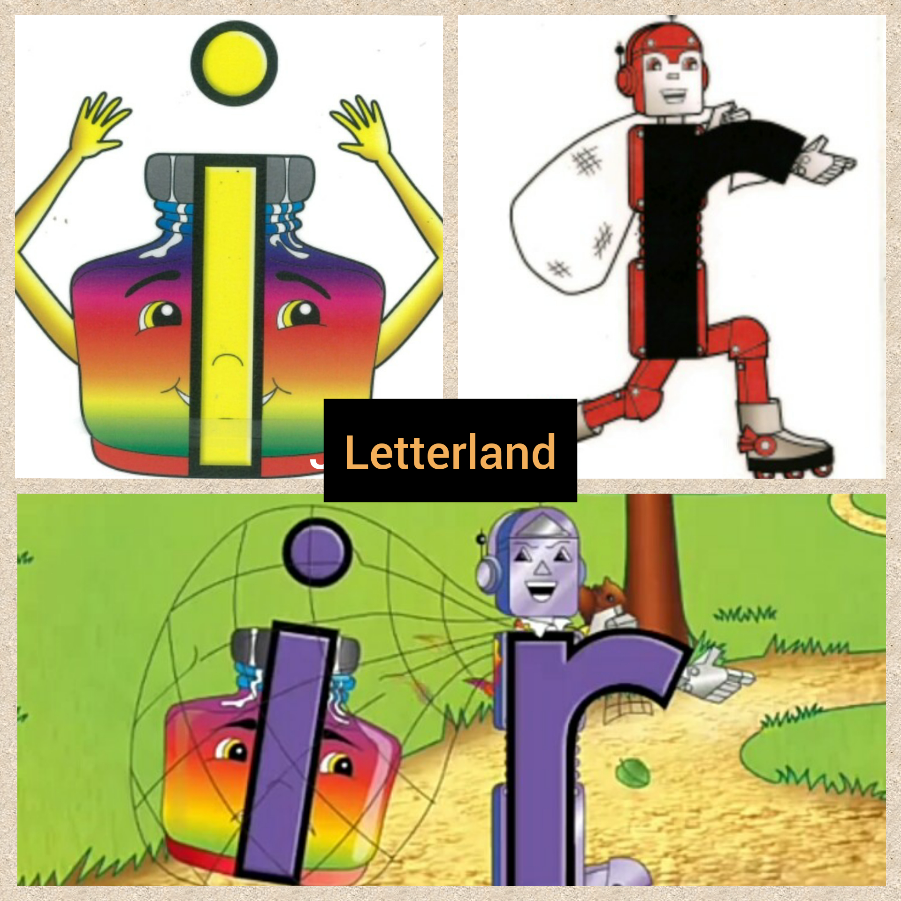 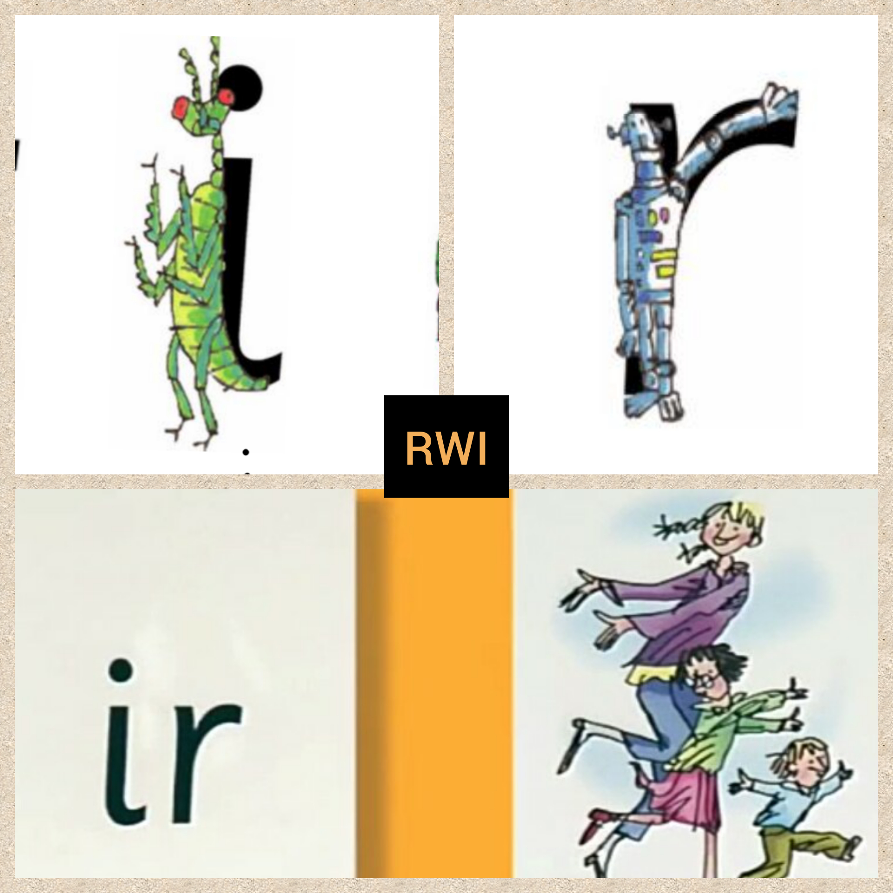 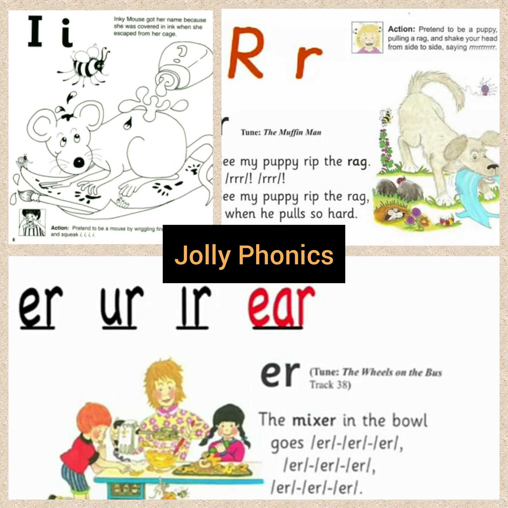用歌曲學 Phonics 係咪有效？適唔適合長期學習？
歌曲對初學者建立發音印象同學習興趣非常有效，尤其適合幼兒階段。Jolly Phonics 的歌曲結合動作同圖像，有助短期記憶，但當學習進入 digraph、替代音同拼寫規則時，單靠歌曲未必足夠，仍需要系統化教學同清晰規則支援，⚠️ 而且對於母語非英語學生，要花時間去理解歌詞裏的單字, 反而令學Phonics的時間拖長了。
Jolly Phonics : A-Z 同Digraphs 都有相對嘅歌，歌詞係關於該發音嘅小故事，如sh song 就係講有個BB瞓緊覺，媽媽叫小朋友要安靜/sh/ /ʃ/ ，小朋友除咗能以歌曲音韻記得發音外，又能以插圖加強視覺記憶，又有相關嘅動作配合，係一套以多重感官學習嘅教材！只係如果要挑剔嘅話，歌詞為咗要描述故事，有時會顧及唔到用字是否恰當，例如A song, 除咗ants係/æ/ 音，其實歌詞裏其他嘅letter a (arm alarm causing)都唔係/æ/音 ; 又如er song , er相配嘅原音係/ɜ ː / (如her)，而mixer同together嘅er由於係喺非重音音節，所以係/ə/唔係/ɜ ː /。
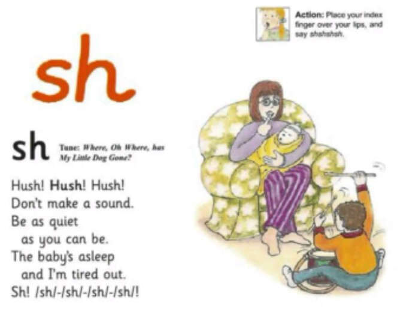 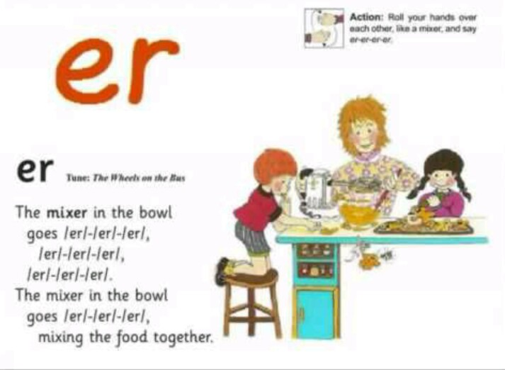 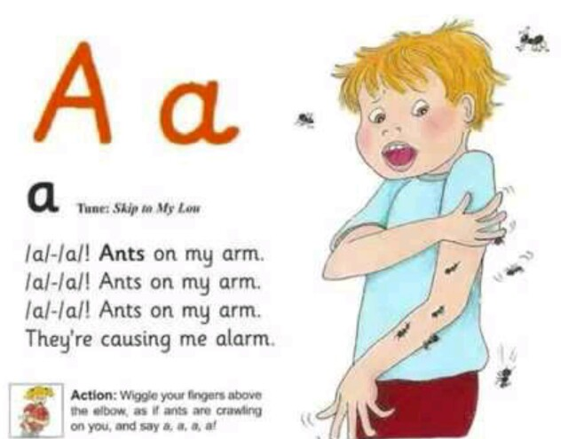Letterland : Letterland 以每個字母為一個角色，歌曲只有A-Z， 而Digraphs (字母組合)只以故事表達，有啲歌會將Phonics Rlues滲入歌詞裏面！如Clever Cat最後一段 “She also makes another sound. Just you wait and see." 預告咗C除咗/k/音仲有其他音(/s/)，又如 Quarrelsome Queen 最後一段"She must have her umbrella." 就可以透過歌詞學識q後面一定跟住u呢個spelling rule 喇！
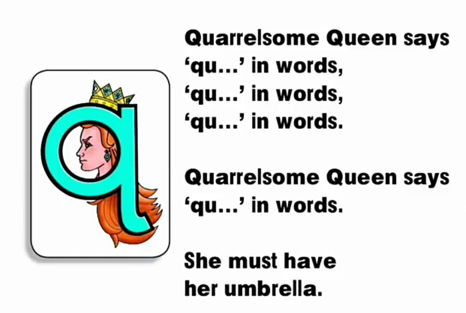 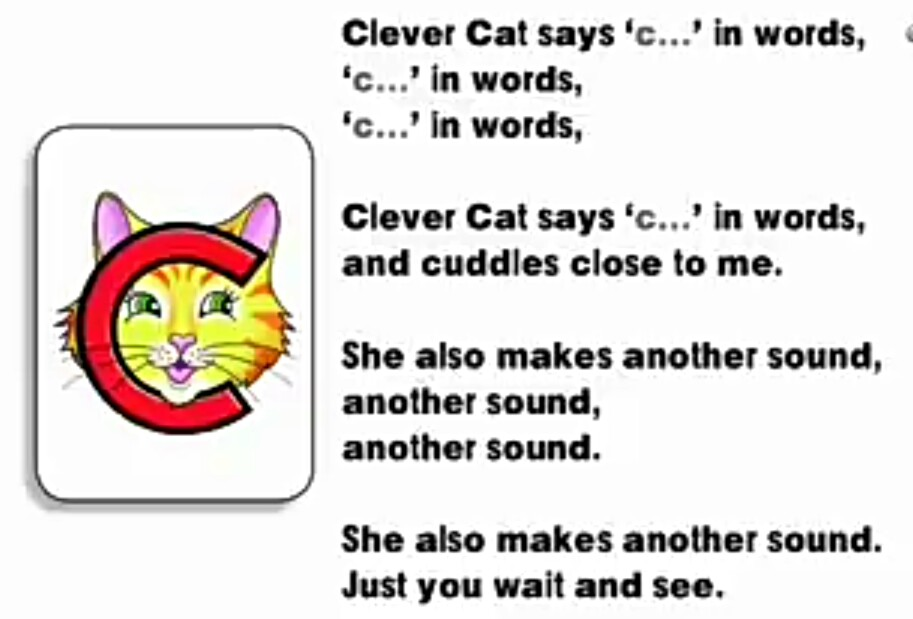RWI : RWI 有一啲故事書嘅歌，但就冇針對原音嘅歌曲。
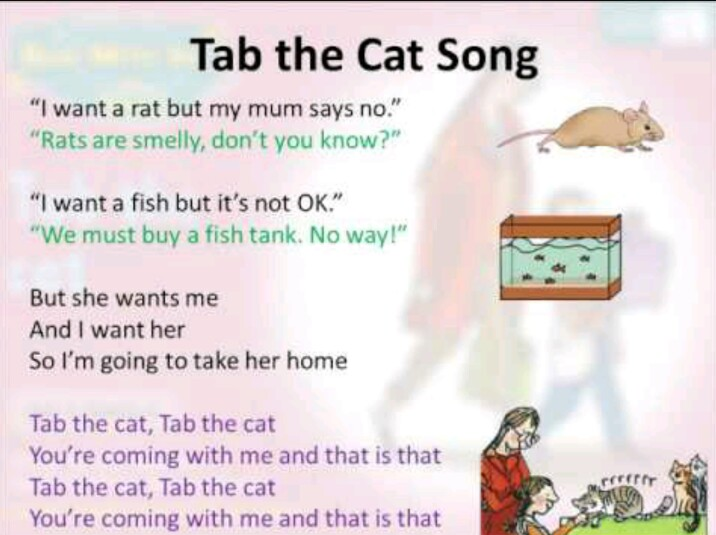一般完成一套 Phonics 課程需要幾耐時間？
完成一套 Phonics 課程一般需時約 1.5 至 2.5 年，而結構較完整、同時涵蓋讀寫訓練的課程如 RWI，可能需要 3 至 4 年。實際進度會因上課頻率、是否包含串字與聽力訓練，以及學生母語背景而有明顯差異。
Jolly Phonics : 約 1.5年-2.5年
| 基本音 | 6–8 個月 | L1 |
| 替代音 | 5–7 個月 | L2 |
| 特別音 | 5–7 個月 | L3 |
Letterland : 約1.5-2.5年
RWI : 3-4年
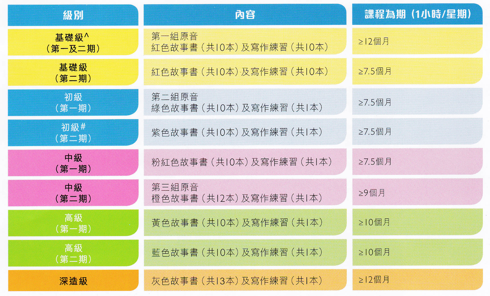Jolly Phonics, Letterland and Read Write Inc. are all examples of systematic synthetic phonics programmes used in the UK. While they share the same core principles, they differ in instructional design, memory strategies, and the balance between reading and spelling instruction.
This page provides an educational comparison of Jolly Phonics, Letterland and Read Write Inc., three synthetic phonics programmes commonly used in the UK and in ESL contexts such as Hong Kong.